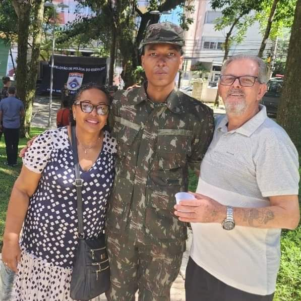

Icaro Romero
Olá sou Icaro dos santos Romero. Tenho 19 anos e desde a época que eu era mais novo, já era fissurado por jogos,desenhos e animações no geral. E por conta disso eu começei a passar meu tempo livre fazendo desenhos de personagens que eu gostava etc. Alguns anos dps começou a viralizar uma vertente do hiphop, o famoso 'TRAP'. E no auge dos meus 13 anos eu decidi aprender a fazer instrumentais e musicas, nessa época também aconteceu o isolamento por conta do covid-19. então eu tinha todo tempo necessário pra aprender a utilizar o Fl studio. Um Softwere de produtores músicais, e foi nele que aprendi a produzir meus instrumentais. E por conta disso e de muitas midias de jogos,livros etc. Comecei a pesquisar sobre como eram feitos os jogos que eu tanto gostava, mas não durou muito tempo quando vi o trabalhão que era programar.
Quando completei 18 anos, eu fui servir o exercito e isso me fez ter diversos aprendizados, desde ser mais disciplinado até aprender a cozinhar, e ser mais forte tanto mentalmente quanto fisicamente.
E ao decorrer de 2023 eu voltei a me interessar em programação novamente, comprei até uns cursos, mas nem cheguei a terminar assim perdendo meu interesse novamente. E foi em 2024 após minha saida do exército, que fiquei sem saber o que ia fazer da minha vida dai em frente. E foi nesse periodo que minha mãe falou pra mim começar a fazer uma faculdade, e eu achei essa ideia interessante. E foi em uma de minhas pesquisas de faculdades na area de "TI" que encontrei o curso superior de "ADS (Analise e desenvolvimento de sistemas)".
E foi isso uma breve passagem sobre mim, porque se for falar sobre tudo que eu já vivi, daria pra fazer um livro hehe.